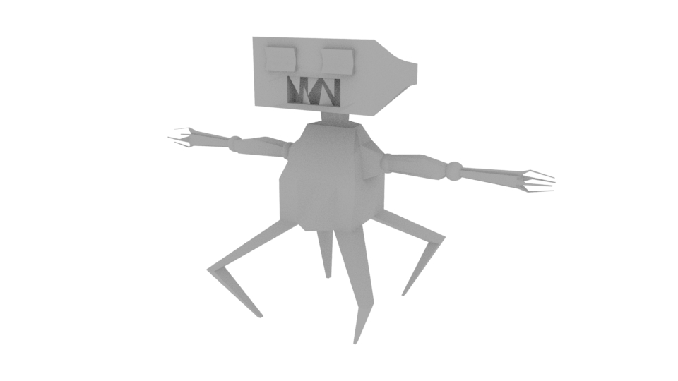
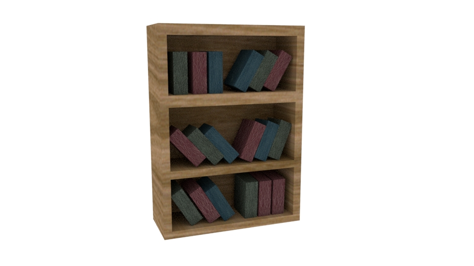
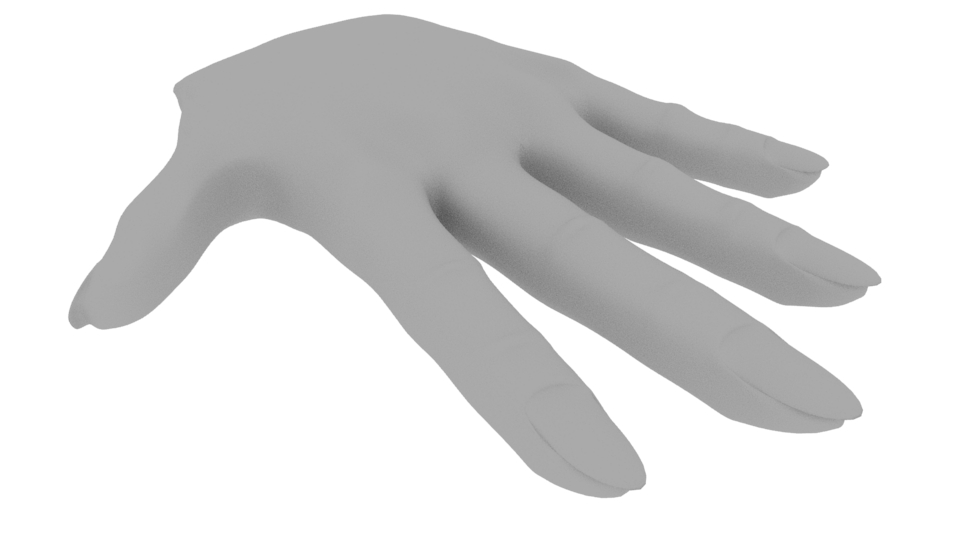
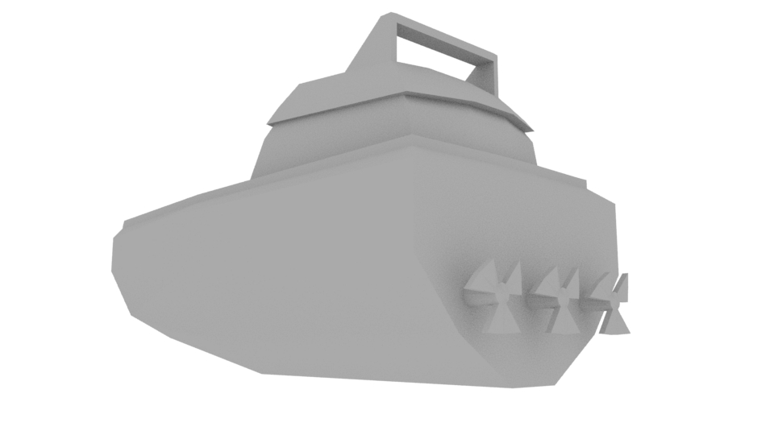

The following models were created entirely by hand in Maya, with texturing and animation done by me where applicable.
   NOTE: You need an HTML 5-capable browser to view the following video previews.
This is a button modeled and textured by me, with a simple keyframe animation showing what happens when the button is pressed by the player.
This is a simple 3D model of the character Garnet from the animated series "Steven Universe". The model was created from scratch by me, and has been fully rigged and skinned.
This video shows a quick preview of an edit I did for a music video of mine. It includes motion tracking (both automatic and by manual keyframing), color correction/grading, and a few other effects.
The full music video can be viewed here: Full Music Video on YouTube
This is a short music video that I directed and edited, with music written, performed, mixed, and mastered by me. The instrumental and additional vocals were provided by the artist D. Cure.
The following photos are all from albums I've released under the stage name "Danny Dragon". They were created in Gimp, with all visual design done by me.